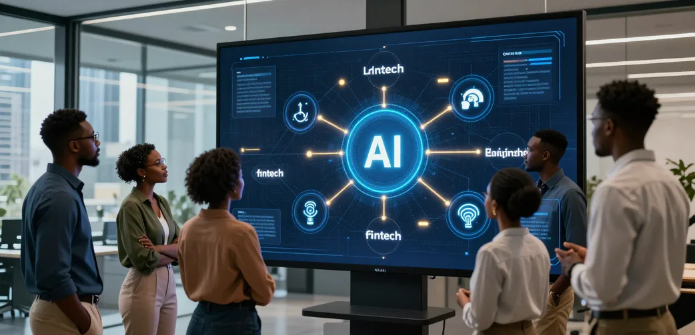

Build the companies thatbuild Africa.
10,000,000+ founders by 2060. A long-horizon system for turning human capability into companies, ownership and sovereign economic opportunity.
We are not building another training programme. We are building the institutional machinery through which founders meet verified problems, form companies and create lasting ownership.
Move from workforce development to founder creation.
Employment remains a valued outcome; ownership is the target. The system measures impact primarily in founders created: people trained, matched into teams, and seeded into real, equity-holding companies.
Nine stages. One venture creation machine.
Africa 2060 works backwards from verified market demand to founder formation, resourcing, and scale.
The complete operating architecture connects the Africa 2060 Academy, Innovation Lab challenge pipeline, approved ownership architecture, and the Venture Operating System.
Explore the System ↗Three complementary pathways. One co-founding unit.
Africa 2060 develops three distinct founder archetypes and systematically unites them into balanced co-founding triads to eliminate the single-discipline vulnerability that causes venture failure.
Make & Build
Founders who physically produce, construct, repair, manufacture, install, grow, process and deliver tangible physical products and infrastructure.
Engineer & Innovate
Founders who design software, build hardware, architect systems, create proprietary intellectual property and solve complex technical challenges.
Organise & Scale
Founders who organize capital, people, physical assets, supply chains, compliance, distribution channels, and commercial enterprise scale.
Track → Sector → Sub-sector → Company Opportunity.
A strategic universe, not a commitment to launch every sector immediately. Africa 2060 identifies the economic systems and value chains within which enduring companies can be built.
Explore the sector universe, sub-sector value chains, dynamic branch architecture, and company opportunities.
Explore the Sectors ↗The problem-intelligence layer of the system.
The Innovation Lab connects African problems to founder development by finding unmet needs that can become meaningful practical projects for Academy participants.

A self-sustaining economic compounding model.
Value created in the ecosystem helps create the next generation of founders, organisations and economic opportunities.
10,000,000+ Founders. By 2060.
The horizon is 2060. Economic ownership is built company by company, founder by founder, through a system designed to learn, form, fund, scale and reinvest.
By 2060, Africa will be home to over 2.5 billion people. The Africa 2060 Initiative is timed to convert this demographic surge into the largest enterprise-building generation in human history.
Separated ownership, governance, capability and intelligence.
The model separates ownership, mission execution, governance, founder development and problem intelligence. Each layer has a distinct role while operating as one founder-creation system.
Step into Africa 2060. Nine substantive destinations.
Africa 2060 is not a single landing page. Explore our dedicated institutional environments to understand why we exist, how the system operates, who we build, and how to participate.
Vision & Doctrine
The strategic reframe from workforce preparation to founder creation, company formation, and majority economic ownership.
Operating Machine
The institutional architecture, operating pipeline, ownership principle, and Venture Operating System.
Founder Pathways
The three distinct disciplines (Vocational, Technical, Operational), horizontal AI layer, and the Convergence Triad formula.
Industrial Atlas
The Track → Sector → Sub-sector → Company Opportunity hierarchy and the strategic sector universe.
Innovation Lab
The problem intelligence engine, 6-stage challenge pipeline, problem-to-company corridor, and real-time African challenge briefs.
Impact & Compounding
The perpetual 6-stage economic compounding loop, 20% parent-company equity remittance, and the 5-vector systemic scorecard.
Insights & Foresight
The institutional knowledge architecture, Living Curriculum, Forced-Renewal rule, and strategic economic monographs.
Partner Gateway
Institutional participation for investors, corporate partners, sponsors, and foundations with direct intake enquiry pathway.
Contact Secretariat
Connect directly with the Africa 2060 Secretariat across 4 operational desks with audited cryptographic logging.